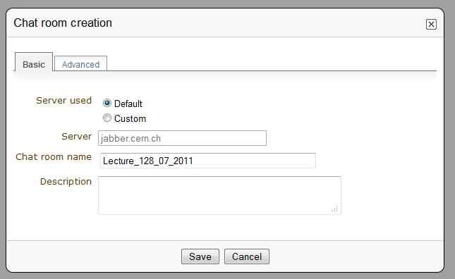

4. Lectures¶
4.1. Lecture¶
A Lecture is the simplest form of event within Indico. The following modules can be found in a lecture:
- General settings: Set the general settings of the conference
- Material: Attach material to the lecture (slides, videos etc.)
- Participants: You can add all the participants for the Meeting or you can open the participation so users can apply for it
- Evaluation: You can set an evaluation form to be completed by the participants
- Protection: Set the access protection of the lecture
- Tools: Where you can set alarms, lock/delete/clone the lecture, etc.
- Logs: List of all the actions performed on the whole of the lecture
4.2. Creating a Lecture¶
If you have the correct access rights within a category, you can create a new lecture by clicking on Create event then Lecture from the blue top bar. You will be presented with a form similar to that for a Meeting. You will need to choose a category in which to create your lectures, then the basic information; you can choose the default style in which the Lecture will be displayed (See Lecture Display Area). Set the access protection and click on Create lecture; you are done. You will be redirected to the Lecture Management Area.
4.3. Lecture Management Area¶
The Management Area allows you to control the different parts of your lecture. The following sections will show all the options in the Lecture Management Area.
4.3.1. General Settings Management¶
In General settings, you can: edit the title, place, start/end date, timezone, default style (see Lecture Display Area ), visibility (see General Settings for conferences), event type, keywords. You can add a description to your lecture, a support email and its caption (which will appear on the event page), organizers and a short display URL (used as a shortcut to the lecture’s event page). You can also add or remove speakers.

Clicking on the button Switch to event page will take you to the home page of your event.
4.3.2. Material¶
You can add material to the lecture, by using the Material menu, and the link Add Material. You can then enter the name and description of the material.

The material can be files or links. You also protect the material to control who has access to view it.
4.3.3. Chat room¶
If the Indico administrators have enabled the chat room module, you can create chat rooms for your lecture.
For more information, see Chat room service.

4.3.4. Video Services¶
If the Indico administrators have enabled the Video Services functionality, you can have access to the Video Services option. The tabs in Video Services are:
- Videoconferencing: Set up a videoconference
- Recording request: Once you’ve set up the location of the lecture, you can do a recording request. You will be presented to a form to complete and you will need to ensure that all speakers have given their permission to have their talks recorded.
- Webcast request: You can do a webcast request. You need to complete a form, select a room capable of webcasting and ensure that all speakers give their permission to have their talks webcasted
- Managers: Here you add video services managers and managers for individual systems
For more information, see video_guide.
4.3.5. Participants¶
You can view here a list of all the participants. You can add or remove participants (as a manager), mark as present/absent, ask for excuse, send email etc. You can also export the list of participants to Excel by clicking on Export to Excel on the right. You can also choose whether to display or not the list of participants in the event page.
For more info see Meeting participants.
4.3.6. Evaluation¶
You can set an evaluation form to be completed by the participants. There are four tabs in this option:

- Setup: Where you set the basic details, such as evaluation start/end date, max. number of submissions etc. You enable and disable the form by clicking on Show/Hide. You also have special actions, such as export or import the evaluation etc.
- Edit: This is where you create the evaluation form. You can add a textbox, textarea, password, select, radio or checkbox question.
- Preview: This shows you a preview of your evaluation form. Feel free to try it, any form submitted from here will not be taken into account.
- Results: Results of the evaluation
For more on the evaluation process, go to Event Evaluation
4.3.7. Protection Management¶
Protection Management in a lecture is the same as that in a Meeting. There is Modification Control, Domain Control and Access Control. When adding to the Access and Modification lists, you can also add Groups of users if any have been defined by Administration.
Modification Control Only the managers listed in the modification control, the creator of the lecture, and any administrators can access the Management Area of the lecture. However, you can add a Modification Key which means anyone with this key can modify the lecture without logging in.

Access Control When the lecture is public, anyone can view the lecture . When the lecture is private, only those in the access list, lecture managers, and administrators can view the lecture. When it is inheriting, it has the same access protection as its parent category. Changing the access protection of its parent category will change the access protection of the lecture.
If the conference is PRIVATE the event manager will be able to set a ‘Contact in case of no access’, so users with no access will know who to contact in order to request access.
Also when private you can also add an Access Key which means anyone with this key can access the lecture without logging in.

Domain Control This is available when the lecture is public. You can specify which domain can access the lecture. For instance, choosing CERN as a domain means only users accessing from a computer in the CERN domain will be able to access.
4.3.8. Tools Management¶
The lecture Tools allow you to carry out certain actions on the whole of the lecture.
4.3.8.1. Alarm Control¶
You can set an alarm/reminder to alert people about the lecture; the alert will be in the form of an email. To do so, click on the button add new alarm in the Alarms tab.

4.3.8.2. Cloning a Lecture¶
Clone the lecture if you would like to make another lecture exactly the same. You have the option to clone it once, at fixed intervals, or on certain dates.

For more explanation on the cloning process, see Clone event for conferences.
4.3.8.3. Posters¶
As for meetings, you can create posters for your lecture. You can either create your own, or use a local template.

4.3.8.4. Lock¶
It is possible to lock the lecture. If you lock the event, you won’t be able to change its details anymore. Only the creator of the lecture or an administrator of the system/category can unlock an event. You will be asked to confirm.

4.3.8.5. Deleting a Lecture¶
The Delete option will delete the whole lecture. There is no undo tool so far, but you will be asked to confirm deletion beforehand.

4.3.8.6. Material Package¶
Using the Material Package option you can create a package of all the materials that have been used in the lecture.

4.4. Lecture Display Area¶
The Lecture Display is the view that users of the lecture will see. If the lecture is public they will not need to log in to view the lecture. It is also the area in which you can access the modification areas if you have access rights. There are various views in which the lecture can be displayed; the following sections show the different views and displays of the different parts of a lecture.
4.4.1. Lecture Style¶
This is the default view for lectures in Indico. If you have
modification rights to any parts in the lecture, you will be able
to access the Management Area by clicking the modification icon  .
.
You can also do some management actions from the tab Manage on the right of the title.


Table Of Contents
- 4. Lectures